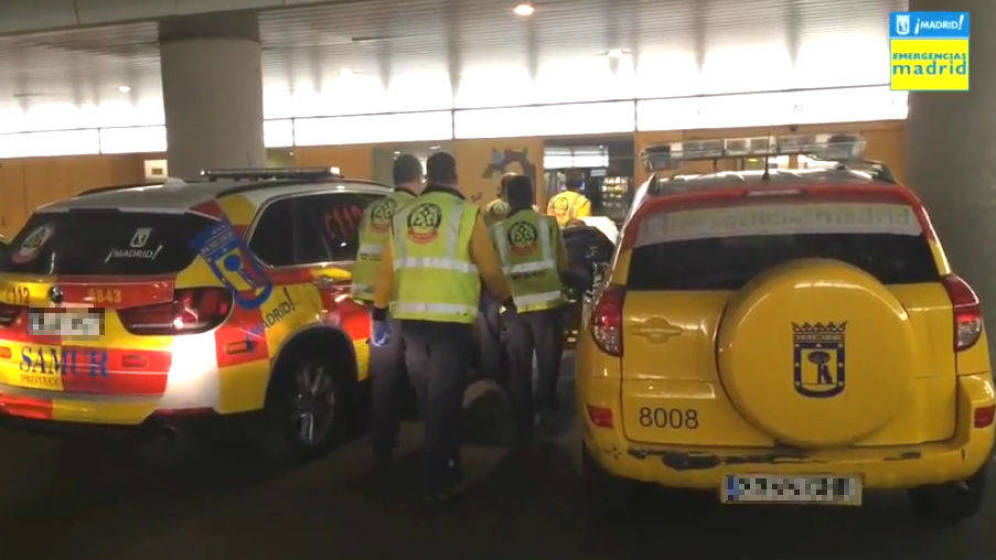
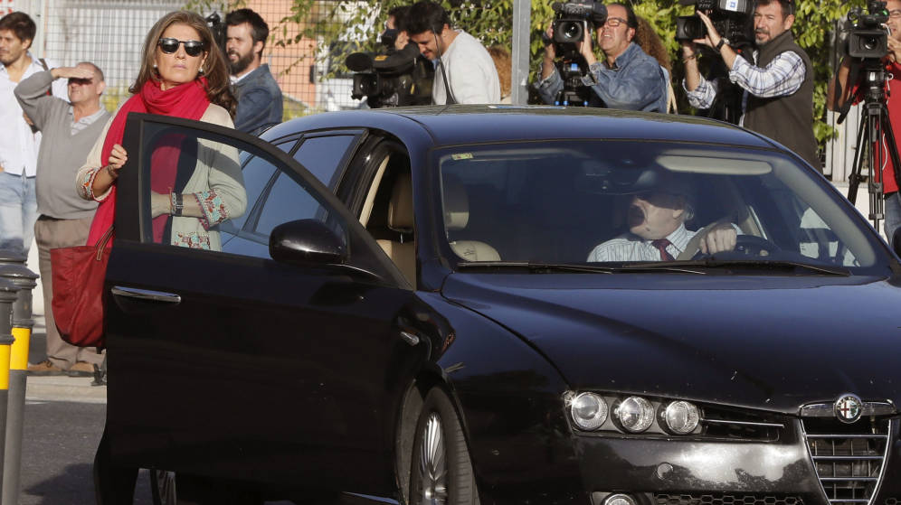
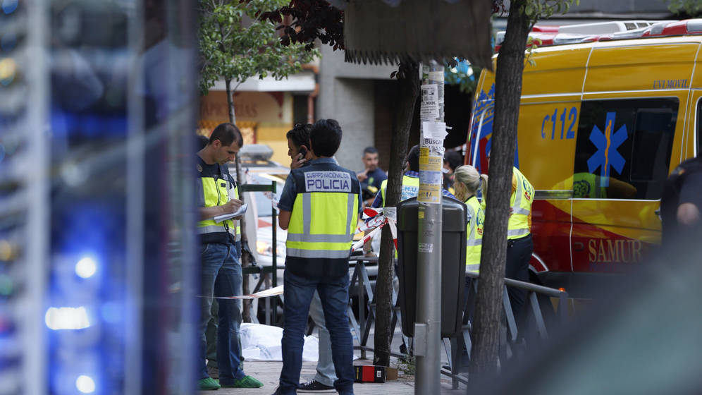

Da a luz en un atasco de la M-30 mientras su pareja atendía al SAMUR por teléfono
Tanto la mujer como su bebé están en perfecto estado después de haber sido atendidas por los servicios sanitarios

Los atascos de tráfico no suelen ser los mejores amigos de los conductores, que deben esperar –en ocasiones, horas y horas– a que el embotellamiento se despeje. Pero a veces es imposible salir de ellos a tiempo. Esto es lo que le ha ocurrido a una mujer de 35 años que ha dado a luz una niña en el kilómetro 6 de la carretera de circunvalación M-30, atendida por su pareja, mientras un técnico del SAMUR le daba instrucciones por teléfono.
Según han informado fuentes de Emergencias Madrid, la pareja se dirigía a un hospital para el nacimiento de su segundo hijo pero sobre las 5.45 horas han telefoneado al 112 porque el nacimiento se precipitaba. El hombre ha atendido a su pareja mientras un técnico del SAMUR le daba instrucciones y cuando ha llegado al lugar la UVI, la niña ya había nacido. Los sanitarios han cortado el cordón, han asegurado la temperatura de madre e hija y las han trasladado a ambas en buen estado al Hospital Gregorio Marañón.
El tren de vida de Bárcenas: dos millones de sueldo del PP y 61.700€ al año de gastos fijos
Un nuevo informe de Hacienda desvela sus movimientos en cuentas corrientes entre 2002 y 2013. El extesorero del PP y su mujer manejaron 41 millones en bancos suizos y españoles

Nuevos datos sobre la fortuna del matrimonio Luis Bárcenas y Rosalía Iglesias, dos de los principales imputados en el caso Gürtel. La pareja mantuvo entre los años 2002 y 2013 un alto tren de vida, que ni siquiera se resintió cuando las investigaciones del caso (destapado en febrero de 2009) empezaron a señalar públicamente al extesorero del PP. La media de gastos fijos cada año fue de 61.700 euros: luz, gas, la comunidad de sus pisos, el colegio de su hijo, telefonía móvil, las escapadas de esquí, el contrato con la televisión de pago, el abono del Real Madrid...
Es una de las principales conclusiones del último informe realizado por la Agencia Tributaria y aportado por la Fiscalía Anticorrupción en el juicio que desde el martes examina la primera etapa de la trama. El informe, de 172 páginas y fechado el 29 de septiembre de 2016, se ha elaborado gracias a la nueva información que ha llegado a la Audiencia Nacional procedente desde Suiza, con fecha posterior a noviembre de 2014. Nuevos datos que han obligado a actualizar los análisis ya realizados y que han provocado que Rosalía Iglesias solicitara este miércoles que se anulara la causa, ya que sus abogados sostienen que Hacienda ha seguido investigando a su cliente incluso después de que la instrucción finalizara formalmente.
La venganza motivó el triple crimen de Usera
La Policía identificó desde el primer momento a un ciudadano extranjero cuya novia estaba manteniendo una relación sentimental con el dueño del despacho de abogados

El triple crimen de Usera tuvo un móvil pasional. Es al menos lo que sospechaba la Policía casi desde pocos días después de que se produjera la masacre el pasado 22 de junio, a plena luz del día. Un ciudadano afincado en Alemania comenzó a desconfiar de la honestidad de su pareja. Comprobó su teléfono móvil y descubrió el pastel. Averiguó que su chica estaba manteniendo una relación sentimental con Víctor Joel Salas, el dueño de un despacho de abogados ubicado en el distrito madrileño de Usera, por lo que fue directamente a pedirle cuentas en persona.
Sin embargo, cuando llegó al número 40 de la calle Marcelo Usera, no estaba su objetivo. El hombre llegó visiblemente alterado y muy nervioso, preguntó por el dueño del despacho y las trabajadoras le dijeron que había salido. Trataron de localizarle para pedirle que viniera, le contactaron telefónicamente, le dijeron que había un hombre muy raro que se había personado en el inmueble y que preguntaba por él. En un momento dado, y tras varios intentos de presionar a las chicas de la oficina, el visitante se volvió loco y asesinó a las tres personas que en ese momento se encontraban en el despacho.